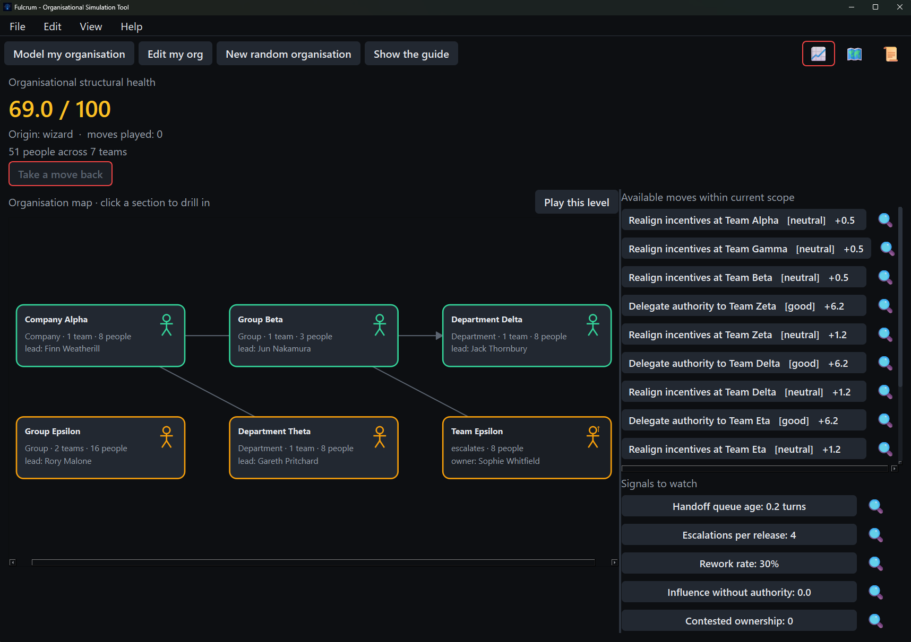
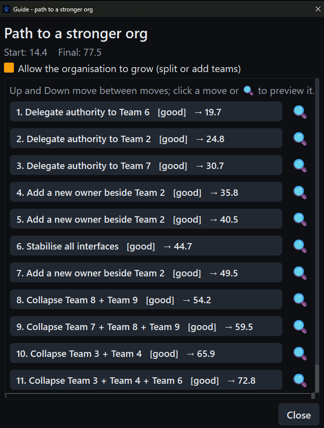
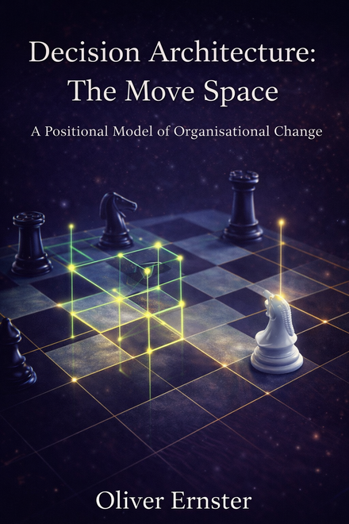

Fulcrum
The Decision Architecture series, made playable. Model any organisation, read its structural health from 0 to 100 and find the moves that make it stronger.
Builds are published on the releases page as they ship.
A model you can hold
Decision Architecture argues that organisations succeed or fail by their structure, not by effort. Fulcrum turns that argument into an engine you operate directly: the decision objects, authority worldlines and structural moves from the books, scored live by a deterministic model.
Structural moves
Delegate authority, stabilise interfaces, realign incentives or collapse a boundary. Every move is scored from blunder to great.
Signals to watch
Handoff queue age, escalations, rework and influence without authority: the lagging indicators, each with its own definition.
A guide to a stronger org
Ask for the guide and the planner shows a move-by-move line from where you are to a stronger score, the way an engine shows its line.
Yours, on your machine
Generate a level, model your own organisation or import one as JSON. There is no account and no server; nothing leaves your machine.
Watch a score climb, move by move
Load an organisation and the board scores its structural health, maps who decides locally against who escalates and lists every move open to you.


Built on the Decision Architecture series
Fulcrum scores organisations with a model whose moves, signals and core ideas come from the Decision Architecture series by Oliver Ernster. The four volumes build the thinking the game puts into play; the hardback collects all four in one reference edition.
Decision Architecture Patterns
Structural patterns that recur across technical organisations
View on Amazon UK →
Decision Architecture: The Move Space
A Positional Model of Organisational Change
View on Amazon UK →